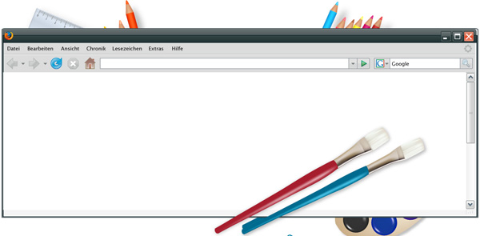

HTML 5华丽丽的新特性
在探讨HTML5的新特性之前，先说HTML5究竟离我们还有多远?用一张时间轴来说明两个关键点。
如图，在2012年，将会由W3C发布候选推荐版，这个版本的发布就代表着HTML5的规范编写已经完成了。而2022年推出的计划推荐版，则意味着至少会有两个浏览器会完全的支持HTML5的所有特性。2022年听起来似乎很遥远，但通过观察现阶段chrome, firefox , safari，IE等浏览器对HTML5的支持程度，可以看出各大浏览器厂商都非常积极。应该不需要到2022年就会有至少两个浏览器支持HTML5。因此现在关注和讨论HTML5，了解HTML5的新特性，为以后的产品规划并非毫无意义。HTML5其实是关于图像，位置，存储，速度的优化和改进，以下分别论述。
图像：
到目前为止，基本上想要直接在网页上进行绘图还是不能轻易完成的，即使是几何图形也不可以。在浏览器当中直接能跟图片的交互操作也很有限，多数是保存和点击。如果希望能够跟图片进行更多的操作或者在浏览器当中画出图形，就需要flash, silverlight 这类插件来帮忙。
不仅如此，HTML5也赋予图片图形更多的交互可能，HTML5的canvas标签还能够配合javascript来利用键盘控制图形图像，这无疑为现有的网页游戏提供了新的选择和更好的维护性和通用性，脱离了flash插件的网页游戏必然能够获得更大的访问量，更多的用户。一些统计数据表格也可以通过使用canvas标签来达到和用户的交互，例如某网站对2009年德国的大选情况统计就全部通过了HTML5来实现用户点击和数据的变更，点选某个区域就可以实时的看到该区域各党派选票率，大大增强了统计图表的可读性。
通过HTML5对图形图像的新特性，未来可能会有在线绘图的工具和应用，人们将不再需要安装painter这类基本的绘图软件，而直接使用基于浏览器的应用。而对用户体验人员和开发者来说，将能够在用户毫不知情的情况下收集和生成用户鼠标的浏览轨迹，从而生成一部分可用的热点图，这对于找出网站的不足，提升用户体验有着重要作用。现在对canvas标签的支持情况如下，可以看到，基本所有的浏览器都已经不同程度上支持了这一特性。
位置：
这个大头针图标从2010年到2011年在各类应用和互联网上应该是非常火爆了吧?没错，就是地理位置，各处都可以看到人们在签到，查找自己当前的地理位置和周边。作为新标准的HTML5自然也不会置身事外，HTML5通过提供应用接口—Geolocation API，在用户允许的情况下共享当前的地理位置信息，并为用户提供其他相关的信息。HTML5的Geolocation API主要特点在于：1. 本身不去获取用户的位置，而是通过其他三方接口来获取，例如IP,GPS,WIFI等方式。2. 用户可以随时开启和关闭，在被程序调用时也会首先征得用户同意，保证了用户的隐私。存储以及速度：
现在，web应用的火爆已经是不折不扣的现实，并且相对传统的应用,web应用不需要安装，所占空间小的特性使其具备传统软件应用所不具备的优势，然而，目前制约web应用最大的问题在于网络连接不能够无时无处。在飞机上，汽车上，火车上，有很多地方都无法被网络信号所覆盖，因此web应用也就无法使用。
HTML5的离线存储使得这个问题迎刃而解。HTML5的web storage API 采用了离线缓存，会生成一个清单文件(manifest file)，这个清单文件实质就是一系列的URL列表文件，这些URL分别指向页面当中的HTML,CSS,Javascrpit,图片等相关内容。当使用离线应用时，应用会引入这一清单文件，浏览器会读取这一文件，下载相应的文件，并将其缓存到本地。使得这些web应用能够脱离网络使用，而用户在离线时的更改也同样会映射到清单文件中，并在重新连线之后将更改返回应用，工作方式与我们现在所使用的网盘有着异曲同工之处。
感兴趣的朋友们可以试下这个网站，就属于便携笔记本的离线应用，可以在离线的时候记录一些便签，在下次上线，或使用其他平台登录时，仍然能够看到之前的记录。缓存的强大并不止在于离线应用，同样在于对cookies的替代，目前我们经常使用的保存网站密码，使用的就是cookies将密码信息缓存到本地，当需要时再发送至服务器端。然而，cookies有其本身的缺点—4KB的大小和反复在服务器和本地之间传输，并且无法被加密。对于cookies的反复传输，不仅浪费了使用者的带宽、供应商的服务器的性能，更增加了被泄露的危险。Web storage API 解救了cookies, 据现有的资料，web storage API将至少支持4M的空间作为缓存，对于日常的清单文件和基础信息，应该已经足够使用了，毕竟4KB我们不是都使用了这么多年了?速度的提升方式在于，webstorage API 将不再无休止的传输相同的数据给服务器，而只在服务器请求和做出更改时传输变更的必须文件，这样就大大节省了带宽，也减轻了服务器的压举数得!
小结：
HTML5的还有很多令人心动的特性和新功能，限于篇幅无法一一举出，但我对于HTML5的前景还是非常看好的，毕竟丰富web应用的大势已经掀起，web2.0的浪潮也正在继续，让我们共同期待HTML5的降临
如图，在2012年，将会由W3C发布候选推荐版，这个版本的发布就代表着HTML5的规范编写已经完成了。而2022年推出的计划推荐版，则意味着至少会有两个浏览器会完全的支持HTML5的所有特性。2022年听起来似乎很遥远，但通过观察现阶段chrome, firefox , safari，IE等浏览器对HTML5的支持程度，可以看出各大浏览器厂商都非常积极。应该不需要到2022年就会有至少两个浏览器支持HTML5。因此现在关注和讨论HTML5，了解HTML5的新特性，为以后的产品规划并非毫无意义。HTML5其实是关于图像，位置，存储，速度的优化和改进，以下分别论述。
图像：
到目前为止，基本上想要直接在网页上进行绘图还是不能轻易完成的，即使是几何图形也不可以。在浏览器当中直接能跟图片的交互操作也很有限，多数是保存和点击。如果希望能够跟图片进行更多的操作或者在浏览器当中画出图形，就需要flash, silverlight 这类插件来帮忙。

HTML5了解人们的需求，HTML5已经确定引入canvas标签，通过canvas，用户将可以动态的生成各种图形图像，图表以及动画。下面是一个示例网站，展示了不通过插件，使用HTML5直接绘制图片有兴趣的朋友可以自己亲自去试玩一下。不仅如此，HTML5也赋予图片图形更多的交互可能，HTML5的canvas标签还能够配合javascript来利用键盘控制图形图像，这无疑为现有的网页游戏提供了新的选择和更好的维护性和通用性，脱离了flash插件的网页游戏必然能够获得更大的访问量，更多的用户。一些统计数据表格也可以通过使用canvas标签来达到和用户的交互，例如某网站对2009年德国的大选情况统计就全部通过了HTML5来实现用户点击和数据的变更，点选某个区域就可以实时的看到该区域各党派选票率，大大增强了统计图表的可读性。
通过HTML5对图形图像的新特性，未来可能会有在线绘图的工具和应用，人们将不再需要安装painter这类基本的绘图软件，而直接使用基于浏览器的应用。而对用户体验人员和开发者来说，将能够在用户毫不知情的情况下收集和生成用户鼠标的浏览轨迹，从而生成一部分可用的热点图，这对于找出网站的不足，提升用户体验有着重要作用。现在对canvas标签的支持情况如下，可以看到，基本所有的浏览器都已经不同程度上支持了这一特性。
位置：
这个大头针图标从2010年到2011年在各类应用和互联网上应该是非常火爆了吧?没错，就是地理位置，各处都可以看到人们在签到，查找自己当前的地理位置和周边。作为新标准的HTML5自然也不会置身事外，HTML5通过提供应用接口—Geolocation API，在用户允许的情况下共享当前的地理位置信息，并为用户提供其他相关的信息。HTML5的Geolocation API主要特点在于：1. 本身不去获取用户的位置，而是通过其他三方接口来获取，例如IP,GPS,WIFI等方式。2. 用户可以随时开启和关闭，在被程序调用时也会首先征得用户同意，保证了用户的隐私。存储以及速度：
现在，web应用的火爆已经是不折不扣的现实，并且相对传统的应用,web应用不需要安装，所占空间小的特性使其具备传统软件应用所不具备的优势，然而，目前制约web应用最大的问题在于网络连接不能够无时无处。在飞机上，汽车上，火车上，有很多地方都无法被网络信号所覆盖，因此web应用也就无法使用。
HTML5的离线存储使得这个问题迎刃而解。HTML5的web storage API 采用了离线缓存，会生成一个清单文件(manifest file)，这个清单文件实质就是一系列的URL列表文件，这些URL分别指向页面当中的HTML,CSS,Javascrpit,图片等相关内容。当使用离线应用时，应用会引入这一清单文件，浏览器会读取这一文件，下载相应的文件，并将其缓存到本地。使得这些web应用能够脱离网络使用，而用户在离线时的更改也同样会映射到清单文件中，并在重新连线之后将更改返回应用，工作方式与我们现在所使用的网盘有着异曲同工之处。
感兴趣的朋友们可以试下这个网站，就属于便携笔记本的离线应用，可以在离线的时候记录一些便签，在下次上线，或使用其他平台登录时，仍然能够看到之前的记录。缓存的强大并不止在于离线应用，同样在于对cookies的替代，目前我们经常使用的保存网站密码，使用的就是cookies将密码信息缓存到本地，当需要时再发送至服务器端。然而，cookies有其本身的缺点—4KB的大小和反复在服务器和本地之间传输，并且无法被加密。对于cookies的反复传输，不仅浪费了使用者的带宽、供应商的服务器的性能，更增加了被泄露的危险。Web storage API 解救了cookies, 据现有的资料，web storage API将至少支持4M的空间作为缓存，对于日常的清单文件和基础信息，应该已经足够使用了，毕竟4KB我们不是都使用了这么多年了?速度的提升方式在于，webstorage API 将不再无休止的传输相同的数据给服务器，而只在服务器请求和做出更改时传输变更的必须文件，这样就大大节省了带宽，也减轻了服务器的压举数得!
小结：
HTML5的还有很多令人心动的特性和新功能，限于篇幅无法一一举出，但我对于HTML5的前景还是非常看好的，毕竟丰富web应用的大势已经掀起，web2.0的浪潮也正在继续，让我们共同期待HTML5的降临